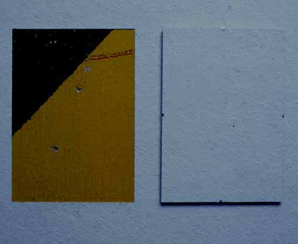
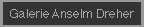
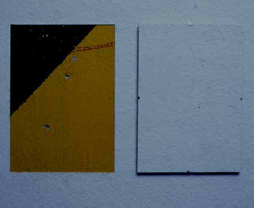
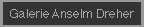

Galerie Anselm Dreher / Karin Sander  Karin Sander, Wandstück, 1996 2 x 29,7 x 21 cm auf Wand 3 x 5 m freigelegte Wand, abgelöste Tapete auf rahmenlosem Bildträger Din A 4 Installation zur Ausstellung "Less is more", Nov./Dez. 1996 
Galerie Anselm Dreher / Karin Sander

Karin Sander, Wandstück, 1996 2 x 29,7 x 21 cm auf Wand 3 x 5 m freigelegte Wand, abgelöste Tapete auf rahmenlosem Bildträger Din A 4
Installation zur Ausstellung "Less is more", Nov./Dez. 1996
